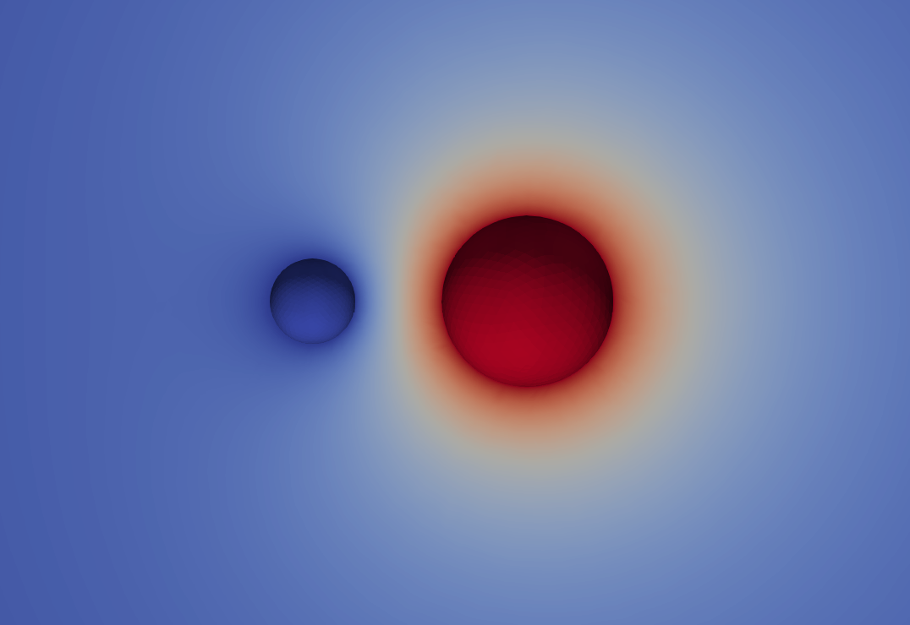
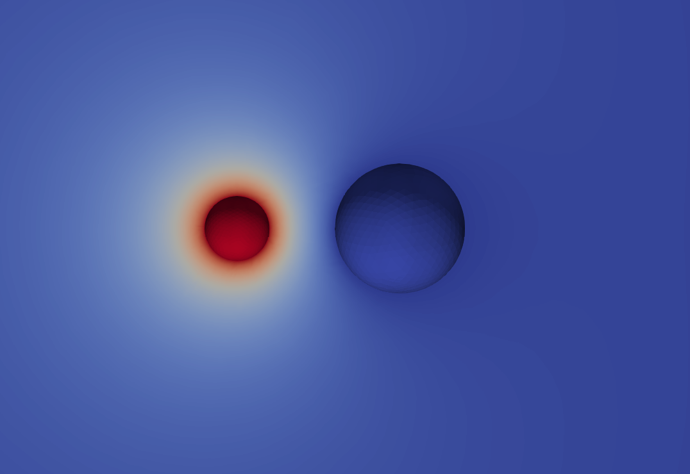

Run your first simulation with Palace
Welcome to your first tutorial with Palace!
In this tutorial, we will:
- Install Palace using Spack
- Set up a simulation using a provided mesh
- Run the simulation and visualize results with ParaView
By the end of this page, you'll understand the basic workflow of electromagnetic simulations with Palace. You will be able to follow the examples and start experimenting with setting up and running your own simulations.
As a motivating example, we'll solve for the electrostatic potential and capacitance matrix of two conducting spheres inside a larger grounded sphere. Our system consists of:
- Two inner spherical conductors
- A larger outer sphere at zero potential
- Vacuum in between
This is one of the examples included with Palace. For more details on the physics and comparisons against analytical results, see the full example page.
A bird's-eye view of Palace
Palace is a finite-element code for PArallel LArge-scale Computational Electromagnetics. It is a command-line executable that runs on single or multiple nodes, supporting both CPUs and GPUs.
A Palace simulation requires two main inputs:
Mesh file: The mesh file describes the target geometry. Palace does not construct meshes, so you must supply one. A large number of formats are supported, allowing you to use your preferred CAD or meshing software. See the supported mesh formats for more details.
Config file: A JSON file that defines what problem to solve and how. It specifies material properties, boundary conditions, problem type, solver parameters, and output settings. See the configuration documentation for complete details.
Palace can solve Maxwell's equations under a few different set of assumptions, leading to different electromagnetic problem types:
- Electrostatic: Computes static electric fields and capacitance matrices (used in this tutorial)
- Magnetostatic: Computes static magnetic fields and inductance matrices
- Eigenmode: Computes eigenmodes and eigenvalues in the frequency domain
- Driven: Computes frequency-domain response to harmonic excitations
- Transient: Computes time-domain response to boundary excitations
Palace produces two types of primary output:
- CSV files with post-processed quantities (capacitance matrices, field values at probe points, etc.)
- PVD files for visualizing fields with ParaView or compatible software
The full list of problem types and their outputs is available in the problem configuration guide.
In this tutorial, we'll use a mesh generated with Gmsh, create a configuration file for an Electrostatic problem, and visualize the resulting electric field with ParaView.
Installing Palace
As a user, the simplest way to install Palace is with Spack, a package manager designed for high-performance computing applications.
Follow the instructions on the official website to install Spack. This involves cloning a repository and sourcing a setup-env shell script. Come back here once you are done with that.
Let's check that Spack is correctly installed on your system. This can be accomplished by running:
spack --versionYou should see your Spack version (yours may differ, that's okay):
1.1.0.dev0 (97227839880551042830011623f5ac5c9903133d)If you get a command not found error, revisit the Spack instructions and ensure you've completed all steps, including sourcing the setup script (the command starting with .). Consider adding this to your shell initialization file (typically, .bashrc or .zshrc).
With Spack installed, we can now move to Palace:
spack install palaceThis will download and compile the latest release of Palace and its dependencies. This step may take tens of minutes depending on your system.
Once installed, load Palace and verify it works:
spack load palace
palace --helpYou should see:
Usage: palace [OPTIONS] CONFIG_FILE
Wrapper for launching Palace using MPI
Options:
-h, --help Show this help message and exit
-dry-run, --dry-run Parse configuration file for errors and exit
-serial, --serial Call Palace without MPI launcher, default is false
-np, --np NUM_PROCS How many MPI processes to use, default is 1
-nt, --nt NUM_THREADS Number of OpenMP threads to use for OpenMP builds, default is 1 or the value of OMP_NUM_THREADS in the environment
-launcher, --launcher LAUNCHER MPI launcher, default is `mpirun`
-launcher-args,
--launcher-args ARGS Any extra arguments to pass to MPI launcher, for example `--map-by` or `--bind-to` with their respective options (quoted)You need to load Palace with spack load palace in each new shell session. For convenience, add this command to your shell initialization file if you are a frequent Palace user.
(Optional) Install ParaView
Palace optionally saves electromagnetic field data in the PVD format, which is immediately accessible by ParaView or ParaView-compatible software. You can download ParaView from the official website or using your package manager (dnf, apt, brew, ...). ParaView is not required for running simulations, but we will use it in this tutorial to visualize our simulated fields.
The mesh
The mesh describes the geometry over which we want to solve the problem. Constructing a mesh is not Palace's responsibility and we'll use a pre-made mesh from the Palace examples for this tutorial.
Create a mesh directory and download the mesh file:
mkdir -p mesh
curl -o mesh/spheres.msh https://raw.githubusercontent.com/awslabs/palace/refs/heads/main/examples/spheres/mesh/spheres.mshThis mesh was created using the Julia interface for Gmsh. If you're interested in how it was created, see the mesh.jl file.
Understanding mesh attributes
To set up a simulation, you need to identify regions in the mesh (collections of volumes or surfaces) to assign material properties and boundary conditions. The mesh formats used within Palace all support this via a notion of Attributes. An attribute is a 1-based index within a mesh that indicates a subset of elements. The particulars of how these attributes are identified are specific to each mesh format.
Our mesh follows the msh2 format and contains four distinct regions:
domain(3D volume, attribute: 1) - the vacuum region between spheresfarfield(2D surface, attribute: 2) - the outer boundary surfacesphere_a(2D surface, attribute: 3) - the first conductor surfacesphere_b(2D surface, attribute: 4) - the second conductor surface
We'll reference these attributes in our configuration file to specify boundary conditions and material properties.
The config file
The configuration file defines the electromagnetic problem: what to solve for, material properties and boundary conditions, the details of the algorithm to be employed, and so on.
Palace config files contain five sections:
Problem: Defines the physics type and output settingsModel: Specifies the mesh file and geometric parametersDomains: Defines material properties for 3D regions and related postprocessing operationsBoundaries: Sets boundary conditions for 2D surfaces and related postprocessing operationsSolver: Controls numerical parameters and solution methods
Here's a complete configuration for our electrostatic problem:
{
"Problem": {
"Type": "Electrostatic",
"Verbose": 2,
"Output": "postpro"
},
"Model": {
"Mesh": "mesh/spheres.msh",
"L0": 0.01
},
"Domains": {
"Materials": [
{
"Attributes": [1],
"Permittivity": 1.0
}
],
"Postprocessing": {
"Probe": [
{
"Index": 1,
"Center": [
-1.5,
0.0,
0.0
]
}
],
"Energy": [
{
"Index": 1,
"Attributes": [1]
}
]
}
},
"Boundaries": {
"Ground": {
"Attributes": [2]
},
"Terminal": [
{
"Index": 1,
"Attributes": [3]
},
{
"Index": 2,
"Attributes": [4]
}
],
"Postprocessing": {
"SurfaceFlux": [
{
"Index": 1,
"Attributes": [3],
"Type": "Electric"
},
{
"Index": 2,
"Attributes": [4],
"Type": "Electric"
}
]
}
},
"Solver": {
"Order": 3,
"Device": "CPU",
"Electrostatic": {
"Save": 2
},
"Linear": {
"Type": "BoomerAMG",
"KSPType": "CG",
"Tol": 1.0e-8,
"MaxIts": 100
}
}
}You can save this as spheres.json or download it directly:
curl -O https://raw.githubusercontent.com/awslabs/palace/refs/heads/main/examples/spheres/spheres.jsonLet's examine each section in detail. For complete documentation on all available options, see the configuration reference.
If you wish to skip the explanation and jump directly to running your simulations, go to Running the simulation and inspecting the output.
Section 1: Problem definition
The Problem section identifies the problem type and the output directory. In this case, we choose Electrostatic. This means that Palace solves Poisson's equation for electric potential sequentially activating all the Terminals on the mesh while setting the non-activated terminals to ground. All simulation types in Palace have some form of iteration (over frequencies, times, mode numbers, or terminals). The output is saved to the "Output" folder specified in the "Problem" section in the JSON file, postpro in this example. If the output already exists, it will be overwritten. See config["Problem"] for details on all available problem types and their outputs.
"Problem":{
"Type": "Electrostatic",
"Verbose": 2,
"Output": "postpro"
}Section 2: Model specification
The Model section specifies the desired geometry. In addition to defining the mesh, it specifies how to convert mesh units to physical units using the L0 parameter. For example, L0 of 1e-2 means that one mesh unit corresponds to one centimeter. The Model section can also include settings for adaptive mesh refinement. See config["Model"] for more information.
"Model":{
"Mesh": "mesh/spheres.msh",
"L0": 0.01
}Section 3: Domain properties
The Domains section defines properties for the 3D regions in the geometry.
Each 3D region (identified by its Attribute) must have a Material definition specifying its physical properties. In our mesh, we have just one 3D region (the vacuum between the spheres and outer boundary) identified by attribute 1. While vacuum properties are applied by default, you can specify various material characteristics as detailed in config["Domains"]["Materials"].
The Domains section also includes a Postprocessing subsection for calculating specific quantities. In this example, we add:
Energy, which activates integrated energy calculations in the 3D domainProbe, which requests field values at specific coordinates defined by aCenter(in mesh units)
When configuring Postprocessing, you must specify an Index that determines the suffix for column headers in the output CSV files. For example, with Index: 1, the probe output will show headers like E_x[1].
Attributes identify mesh regions and come from the mesh file. In our example, attributes 1-4 identify the vacuum region, outer boundary, and two spheres.
Index is used only for postprocessing and defines a notation used in the output CSV files. It has no relation to mesh attributes and can be any positive integer.
Note how Attributes is an array and Index an integer: multiple attributes might be needed to specify a given region in the mesh that corresponds to a single output.
"Domains":{
"Materials": [
{
"Attributes": [1],
"Permittivity": 1.0
}
],
"Postprocessing": {
"Probe": [
{
"Index": 1,
"Center": [
-1.5,
0.0,
0.0
]
}
],
"Energy": [
{
"Index": 1,
"Attributes": [1]
}
]
}
}Section 4: Boundary conditions
The Boundaries section maps 2D surfaces in your mesh to their physical boundary conditions. Palace offers numerous boundary condition types, all documented in config["Boundaries"].
Unlike 3D regions, which all require Material specifications, 2D surfaces have default behavior: any external surface without an explicit boundary condition is treated as a Perfect Magnetic Conductor (PMC), where the tangential component of the magnetic field is zero, and no conditions are imposed on internal surfaces (since terms from either sides cancel out on such boundaries).
For our electrostatic problem, we define:
- The outer boundary as
Ground(zero potential) - Two
Terminalsurfaces (one for each sphere)
Terminals are particularly important for Electrostatic simulations. Palace activates each terminal sequentially (applying a unit of potential and grounding all the other ones) and solves Maxwell's equations. Each of these steps adds a new row to the output CSV files.
Like the Domains section, Boundaries also includes a Postprocessing subsection for calculating quantities such as surface fluxes across 2D regions. Here, we compute the fluxes of electric fields across the spherical conductors. See config["Boundaries"] for all available postprocessing options.
"Boundaries":{
"Ground": {
"Attributes": [2]
},
"Terminal": [
{
"Index": 1,
"Attributes": [3]
},
{
"Index": 2,
"Attributes": [4]
}
],
"Postprocessing": {
"SurfaceFlux": [
{
"Index": 1,
"Attributes": [3],
"Type": "Electric"
},
{
"Index": 2,
"Attributes": [4],
"Type": "Electric"
}
]
}
}Section 5: Solver settings
Finally, the Solver section prescribes properties of the problem and the numerical algorithm, what device to use for the solution, and how much to save as PVD files. For this problem, we run on CPU, specify third-order finite elements, and save the fields for both terminal activations. The details of the linear solver parameters in "Linear" are not essential for this tutorial.
Other problem types typically have more extensive Solver configurations, including excitation parameters and frequency sweep settings. For complete details on all solver options, see config["Solver"].
"Solver":{
"Order": 3,
"Device": "CPU",
"Electrostatic": {
"Save": 2
},
"Linear": {
"Type": "BoomerAMG",
"KSPType": "CG",
"Tol": 1.0e-8,
"MaxIts": 100
}
}Running the simulation and inspecting the output
If you've followed along, you should now have two files:
├── mesh
│ └── spheres.msh
└── spheres.jsonIf you need to download the files, run:
mkdir -p mesh
curl -o mesh/spheres.msh https://raw.githubusercontent.com/awslabs/palace/refs/heads/main/examples/spheres/mesh/spheres.msh
curl -O https://raw.githubusercontent.com/awslabs/palace/refs/heads/main/examples/spheres/spheres.jsonBefore running your simulation, it's a good idea to validate the configuration:
palace --dry-run spheres.jsonThis checks for syntax errors and basic configuration issues. The validator should return:
>> /opt/spack/linux-x86_64_v3/openmpi-5.0.8-ne4yke4vrgsfy2ny33stmqidzu56a3tz/bin/mpirun -n 1 /opt/spack/linux-x86_64_v3/palace-git.hughcars_restrict-github-ci-trial_develop-73lbfnph4yv7ylb6mv3bw3wi2rld5sr3/bin/palace-x86_64.bin --dry-run spheres.json
Dry-run: No errors detected in configuration file "spheres.json"Finally, we are ready to run the simulation:
palace -np 1 spheres.json-np 1 instruct Palace to run with a single MPI process.
You'll see output including mesh details, solver progress, and timing information. The amount of information can be controlled with the Verbose configuration option in the JSON file.
>> /opt/spack/linux-x86_64_v3/openmpi-5.0.8-ne4yke4vrgsfy2ny33stmqidzu56a3tz/bin/mpirun -n 1 /opt/spack/linux-x86_64_v3/palace-git.hughcars_restrict-github-ci-trial_develop-73lbfnph4yv7ylb6mv3bw3wi2rld5sr3/bin/palace-x86_64.bin spheres.json
_____________ _______
_____ __ \____ __ /____ ____________
____ /_/ / __ ` / / __ ` / ___/ _ \
___ _____/ /_/ / / /_/ / /__/ ___/
/__/ \___,__/__/\___,__/\_____\_____/
Git changeset ID: e8b3b6c
Running with 1 MPI process
Device configuration: cpu
Memory configuration: host-std
libCEED backend: /cpu/self/xsmm/blocked
Finished partitioning mesh into 1 subdomain
Characteristic length and time scales:
L₀ = 1.500e+00 m, t₀ = 5.003e+00 ns
Mesh curvature order: 3
Mesh bounding box:
(Xmin, Ymin, Zmin) = (-7.493e-01, -7.498e-01, -7.500e-01) m
(Xmax, Ymax, Zmax) = (+7.500e-01, +7.499e-01, +7.500e-01) m
Parallel Mesh Stats:
minimum average maximum total
vertices 2536 2536 2536 2536
edges 17321 17321 17321 17321
faces 29150 29150 29150 29150
elements 14362 14362 14362 14362
neighbors 0 0 0
minimum maximum
h 0.00223266 0.164618
kappa 1.03541 8.77894
Configuring Dirichlet BC at attributes:
2-4
Assembling system matrices, number of global unknowns:
H1 (p = 3): 66328, ND (p = 3): 269949, RT (p = 3): 347244
Operator assembly level: Partial
Mesh geometries:
Tetrahedron: P = 45, Q = 24 (quadrature order = 6)
Assembling multigrid hierarchy:
Level 0 (p = 1): 2536 unknowns
Level 1 (p = 2): 19857 unknowns
Level 2 (p = 3): 66328 unknowns
Computing electrostatic fields for 2 terminal boundaries
It 1/2: Index = 1 (elapsed time = 1.40e-07 s)
Residual norms for PCG solve
0 KSP residual norm ||r||_B = 8.395588e-01
1 KSP residual norm ||r||_B = 7.135496e-02
2 KSP residual norm ||r||_B = 1.530790e-02
3 KSP residual norm ||r||_B = 3.327099e-03
4 KSP residual norm ||r||_B = 6.408637e-04
5 KSP residual norm ||r||_B = 8.913724e-05
6 KSP residual norm ||r||_B = 1.432229e-05
7 KSP residual norm ||r||_B = 2.628097e-06
8 KSP residual norm ||r||_B = 2.386088e-07
PCG solver converged in 8 iterations (avg. reduction factor: 9.727e-02)
Sol. ||V|| = 5.872299e+01 (||RHS|| = 3.003335e+01)
Field energy E = 2.331e-01 J
Wrote fields to disk for source 1
Updating solution error estimates
It 2/2: Index = 2 (elapsed time = 6.77e+00 s)
Residual norms for PCG solve
0 KSP residual norm ||r||_B = 1.201521e+00
1 KSP residual norm ||r||_B = 1.051406e-01
2 KSP residual norm ||r||_B = 2.383004e-02
3 KSP residual norm ||r||_B = 5.002471e-03
4 KSP residual norm ||r||_B = 8.435736e-04
5 KSP residual norm ||r||_B = 1.512779e-04
6 KSP residual norm ||r||_B = 2.217145e-05
7 KSP residual norm ||r||_B = 3.965631e-06
8 KSP residual norm ||r||_B = 4.503110e-07
9 KSP residual norm ||r||_B = 6.265999e-08
PCG solver converged in 9 iterations (avg. reduction factor: 1.085e-01)
Sol. ||V|| = 6.509716e+01 (||RHS|| = 3.033164e+01)
Field energy E = 4.668e-01 J
Wrote fields to disk for source 2
Updating solution error estimates
Completed 0 iterations of adaptive mesh refinement (AMR):
Indicator norm = 6.910e-03, global unknowns = 66328
Max. iterations = 0, tol. = 1.000e-02
Elapsed Time Report (s) Min. Max. Avg.
==============================================================
Initialization 0.301 0.301 0.301
Mesh Preprocessing 0.424 0.424 0.424
Operator Construction 4.261 4.261 4.261
Linear Solve 0.158 0.158 0.158
Setup 2.247 2.247 2.247
Preconditioner 3.850 3.850 3.850
Coarse Solve 0.009 0.009 0.009
Estimation 0.045 0.045 0.045
Construction 2.297 2.297 2.297
Solve 2.254 2.254 2.254
Postprocessing 0.147 0.147 0.147
Disk IO 8.142 8.142 8.142
--------------------------------------------------------------
Total 24.149 24.149 24.149Notice that Palace ran two iterations, one for each Terminal. Different problem types will have different iteration patterns (e.g., Driven iterating over frequencies or Transient over time steps) and many of the output CSV files are organized along these iterations.
Understanding the output
Once the simulation is completed, you'll find a postpro directory containing:
postpro:
domain-E.csv
error-indicators.csv
palace.json
paraview
probe-E.csv
surface-F.csv
terminal-C.csv
terminal-Cinv.csv
terminal-Cm.csv
terminal-V.csv
postpro/paraview:
electrostatic
electrostatic_boundary
postpro/paraview/electrostatic:
Cycle000001
Cycle000002
Cycle000003
electrostatic.pvd
postpro/paraview/electrostatic/Cycle000001:
data.pvtu
proc000000.vtu
postpro/paraview/electrostatic/Cycle000002:
data.pvtu
proc000000.vtu
postpro/paraview/electrostatic/Cycle000003:
data.pvtu
proc000000.vtu
postpro/paraview/electrostatic_boundary:
Cycle000001
Cycle000002
electrostatic_boundary.pvd
postpro/paraview/electrostatic_boundary/Cycle000001:
data.pvtu
proc000000.vtu
postpro/paraview/electrostatic_boundary/Cycle000002:
data.pvtu
proc000000.vtuIn addition to the palace.json, which contains metadata about the simulation (including timing information and counts), the output consists of CSV and PVD files. You can safely ignore all the Cycle directories as their content is accessed through the corresponding PVD file. For more details on output files and formats, see the output documentation.
CSV files
CSV files contain post-processed quantities and depend on the specific problem type chosen. Let's look at two examples:
probe-E.csv shows electric field values at the probe point we defined in the Postprocessing section in "Domains":
i, E_x[1] (V/m), E_y[1] (V/m), E_z[1] (V/m)
1.00e+00, +2.445559203450e+03, -1.449177963678e+01, +1.351677956272e+00
2.00e+00, -1.670643780146e+03, +9.899822289826e+00, -9.233766932299e-01The first column i indicates the iteration and corresponds to the Index associated to each Terminal, whereas the [1] in column headers corresponds to the Index we specified in the Probe section.
One of the key outputs of the Electrostatics problem type is the capacitance matrix, saved in terminal-C.csv:
i, C[i][1] (F), C[i][2] (F)
1.00e+00, +1.237445610357e-12, -4.770975738889e-13
2.00e+00, -4.770975738889e-13, +2.478413459856e-12Here, both rows and columns correspond to Terminal indices. As expected, the matrix is symmetric.
Visualizing with ParaView
In this final step, we'll create a visualization of our simulation results using ParaView. We'll work with both the volume field data (electrostatic.pvd) and the boundary surface data (electrostatic_boundaries.pvd) to reproduce the figures in the example page.
Launch ParaView and navigate to your
postpro/paraviewdirectoryOpen the volume data:
- Click File → Open → Navigate to
postpro/paraview/electrostatic/electrostatic.pvd, nothing should be rendered so far - Click the Apply button in the Properties panel (left side), a sphere should appear
- In the Coloring section, select
V, the sphere should now be colored according to the potential values
- Click File → Open → Navigate to
Create a slice to see inside:
- From the menu bar, select Filters → Common → Slice
- In the Properties panel (left side), set the Origin to (0, 0, 0)
- Set the Normal to (0, 1, 0) for a vertical slice along the Y-axis
- Click Apply
- Use the mouse to rotate and zoom until you can see the outlines of both inner spheres
Add the boundary surfaces:
- Click File → Open → Navigate to
postpro/paraview/electrostatic_boundaries/electrostatic_boundaries.pvd - Click Apply in the Properties panel
- In the Coloring section, select
V - The two inner spheres should now appear with their surface potentials displayed
- Click File → Open → Navigate to
Notice the time slider at the top of the ParaView window:
- Frame 0: First terminal activated (first sphere at unit potential)
- Frame 1: Second terminal activated (second sphere at unit potential)
- Frame 99: Error estimates
You can save the visualization as an image with File → Save Screenshot, or save the entire ParaView state with File → Save State (allows reopening your complete setup later). The result should look more or less like the images below:
 
ParaView offers many more advanced features for data analysis and visualization. For more details, refer to the official ParaView documentation.
Where to go next
Congratulations! You've completed your first Palace simulation. To continue learning:
- Try looking at the other output files in this simulation
- Try modifying this example with different materials or boundary conditions
- Explore the examples to see different problem types and more complex geometries
- Read the configuration reference to understand all available options
If you encounter any issues or have questions, please report them to our GitHub issue tracker.